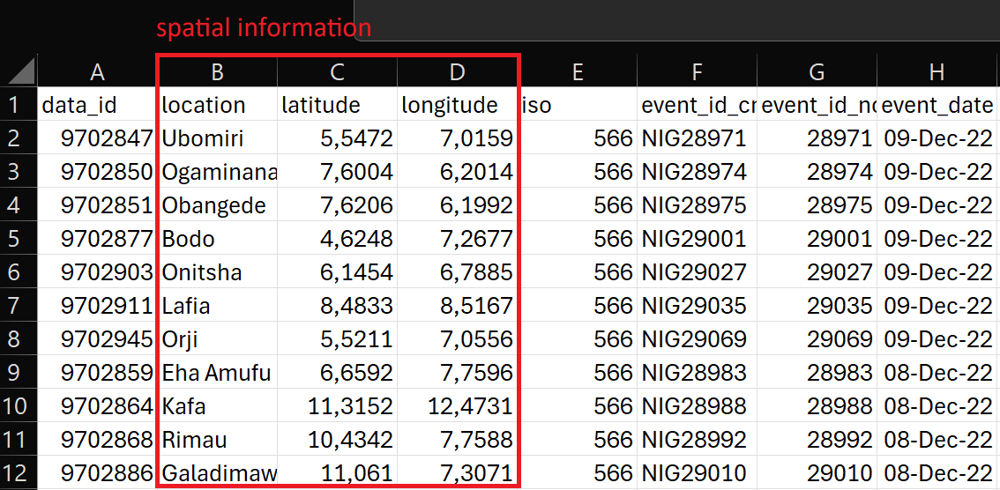
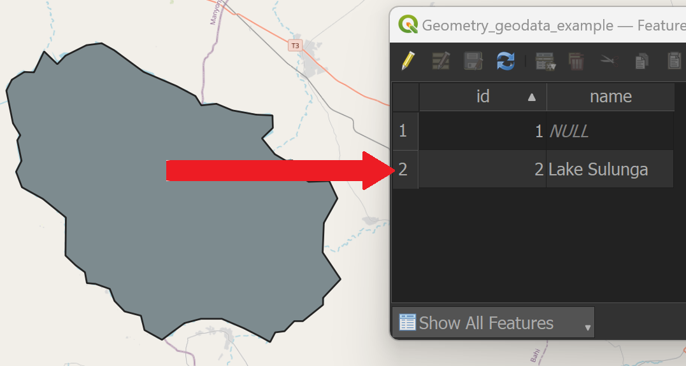
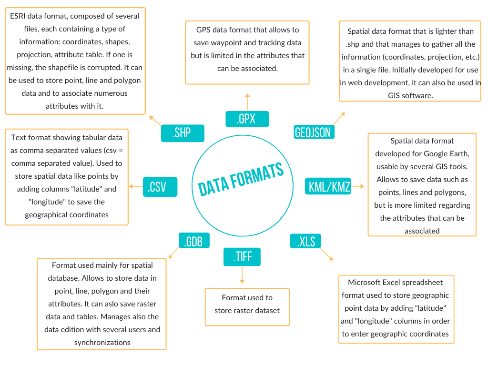

Introduction to geodata, layers, and projections#
Competences:
In this chapter, you will learn what geodata is, and understand the difference between vector and raster data. Furthermore, this chapter explains the layer concept of GIS-software, which is fundamental to every map you will create. Finally, we will explain the basics of projections, which is the method of how we display the spherical shape of our planet onto a 2 dimensional plane.
What is geodata?#
Geodata, geospatial data, or geographic data is data that has geographical information. This means that the data refers to a location, that is defined by coordinates. It is similar to other forms of data that can be represented in tables (such as Excel spreadsheets or CSV-files) but each item in the data set also holds coordinate information (see figure below). GIS-software helps us visualise and manipulate geodata in a 2D (or even 3D) space. Geodata represents a real-world object on a map as a feature. A feature consists of two types of information: the geospatial location - the coordinates - and attributes - e. g. name, length, elevation, or any other information.

Fig. 13 A data table in Microsoft Excel with geographical information (red)#
What type of information can be stored in geodata is almost endless. It can hold information about the physical world - such as elevation data, environmental data (soils, climate, temperature, rainfall, information about weather events or natural phenomena), data about the infrastructure, buildings, transportation, etc. - or sociocultural or economic data - such as demographic data, administrative boundaries, social events, crime, etc. Geodata usually represents data entries as geometries on a 2D canvas. These geometries can be points, lines, rectangles, circles, or polygons and can represent various objects that exist in the physical world - such as roads, lakes, trees, etc. - or represent intangible objects - such as administrative boundaries, population numbers, health indicators, historical events, etc.

Fig. 14 The data entry for Lake Sulunga is represented by the grey polygon to the left#
There are two primary types of geographic data: vector data and raster data. Both types represent tangible or intangible things in the real world. However, how they store this data is quite different. Because of this, the manipulation and representation of these two types differs dramatically. Understanding the difference between these two types, and how to work with each type on it’s own, as well as, combining both types, will be one of the main skills you will acquire when learning GIS.

Fig. 15 Raster Vector Concept. Source: Adapted from WikiMedia#
Vector data#
Vector data represents spatial information through geometrical shapes, such as points, lines, or polygons. Each object stores the location (as address or coordinates) and further attributes, e.g. name, ID, or any other sort of information. Which geometry is used, depends on the type of data that is represented. For example, a road will be represented by a line, a building will be represented by polygon and a tree might be represented by a point.

Fig. 16 Vector Data overview. Source: HeiGIT#
Point data usually only have one set of coordinates (x, y, and sometimes z) per data entry.
Lines are constructed by connecting multiple points which are saved as a single data entry.
Polygons are also constructed by connecting several points, but they form a closed geometry. Each geometry is then represented by a single data entry.
Vector file formats#
There are several file formats for vector data. They each differ in how the geometries and attributes are stored. However, they still all only contain points, lines, or polygons. Some formats have advantages over others, while others are still used out of convention, although they are outdated. The following table gives a short description of commonly used vector file formats.
Filename extension |
Name |
Description |
|---|---|---|
.shp |
Shapefile |
Old but still widely used geodata format. Can only contain one dataset. The file has to consist of at least three different files (.shp, .shx, .dbf) |
.gpkg |
GeoPackage |
Very versatile geodata format and the new standard for geodata. Can contain multiple datafiles (vector, raster and non-spatial data like tables) |
.kml |
Keyhole Markup Language |
Geodata format for use with Google Earth |
.gpx |
GPS Exchange Format |
Geodata format for the exchange of coordinates. For example for waypoints of tracks. |
.geojson |
GeoJSON |
Open data format using Javascript Object Notation to store geographic data. Can store multiple type of geometries in one file. |
Raster data#
Another type of geospatial data is raster data. Raster data consists of cells that are organized into a grid with rows and columns, thus forming a raster. Each cell, or pixel, contains a value which holds information (for example, temperature, or population density). Since raster data consists of pixels, aerial photographs or satellite imagery can also be used as raster data, if they have geographical coordinates (see georeferencing).
Typical raster data can be, for example, elevation data (or digital elevation model, DEM), precipitation data, interpolated temperature data, or population density. The value of each cell is usually visualised by assigning a color to a value. For elevation data, for example, a color ramp is usually used. For categorical data, such as landuse, color categories (such as green = forest; yellow = agricultural landuse, red = residential).
Raster values usually have only 1 value per cell, however, it can also have multiple (color-)bands. Satellite imagery usually offers several bands (different light spectrum), which we can use to analyze different phenomena, such as the humidity of plants. Multiple bands means that you have more than one value per cell.
The main spatial characteristics are the extent - the area the grid represents in the real world (10km², 100km²) - and the raster resolution - the size of each pixel. In the image below, you can see two raster datasets with different resolutions.

Fig. 17 Two raster datasets with different resolution covering the same region. Source: CartONG#
In this picture you can see the same location, on the left as vector data, visualising streets and urban area, and on the right hand as raster data (satellite image), showing the land cover.


{kind=link}
{kind=link}
{kind=link}
Raster data formats#
Raster data can have the following data formats:
Filename extension |
Name |
Description |
|---|---|---|
.tif/.tiff/.geotiff |
Tag Image File Format |
Common raster and image data format. Does not necessarily have georeferenced data. If a .tif file is georeferenced it is referred to as GeoTIFF. |
.nc |
netCDF |
Standard data format for scientific data like speed or temperature. Can be a raster file. Can contain multiple datasets |
.asc |
Esri ASCII Grid files |
Old, simple raster file format, always with georeferenced data |
The figure below summarizes the different data formats for raster and vector data commonly used in GIS.
{kind=link}

Fig. 20 The main geographical data formats. Source: CartONG#
The layer concept#
GIS-software helps us visualise geographic data. It does so by displaying the geometries or raster cells on a 2D canvas. However, when creating a map, we are using multiple datasets at once. Every type of geographic data, such as raster data, polygons, points, or lines, is usually stored inside a layer. Each layer consists of geographic objects of the same type (line, polygon, raster, …). GIS-software displays these layers on top of each other and lets you rearrange the order of these layer, in order to create insightful maps. [1]
By adding different layers, you build your map and can combine information from different sources. With those, you can then perform analyses or adapt the representation by using symbols and colors.

Projections#
Introduction#

Fig. 22 Examples for Projections. Source:(http://ibis.colostate.edu/webcontent/NR505/2012_Projects/Team6/GISConcepts.html)#
An important issue when creating a map of a region, is that it is impossible to create a representation of a sphere on a 2D plane without distorting the map. The way in which the globe is represented on a flat surface is called a projection. There are many different methods to achieve this. These are called coordinate reference systems (CRS). Every projection either distorts the length between two points or from a single point (equidistant map projection), the size of an area (equiareal map projection), or the angles between two lines (conformal map projection). However, some projections are able to display the angles correctly, while others display the sizes of an area or the distance between two points correctly.
Every projection has its use case. For example, the Mercator projection displays the angles between to points correctly. This was used extensively during the seafaring age without satellites, as ships could navigate to a destination by following a straight line on a map. For example, the Mercator projection displays road intersections correctly: a road that crosses another road at a right angle, will be displayed as such on a mercator projection. This is especially useful when navigating. The shape of an area remains correct, since the angles between each line stay true. However, if you increase the scale of the map, the size and distances get distorted dramatically (see figure below). Furthermore, the further away from the equator you get, the more distortion you get. You can check the true size in comparison to different placements on the map on TheTrueSize.com website. A popular example is Greenland in comparison with Africa, which seem on the map to be about the same size, but in reality Africa is a lot bigger.

Fig. 23 Comparison Greenland - Africa. Source: The True Size of#
In the dropdown below, you can look at the size distortion of mercator yourself.
TheTrueSize.com - compare the effects of different projections
How to choose an appropriate projected coordinate system#
In GIS, we project the earth onto a flat coordinate system (hence the name coordinate reference system or CRS).
It is crucial that you are aware that your data can be in one CRS and your QGIS
project in another CRS. The data and the project should always be the same, or
else you will get wrong results! The project CRS is displayed on the bottom right
corner of the QGIS interface.
To change the CRS of your data and project, follow the steps explained below.
The default CRS/EPSG code of every QGIS project is the World Geodetic System 84
(EPSG: 4326). This CRS is optimized for world maps. So not perfect for most
applications, because we mostly use maps for small areas.
Tip
Choose the projection according to your area of interest. There are special CRS, that have been created to reduce the distortion and inaccuracy of projections for different regions on earth. You can find all the projections and their CRS codes on EPSG.io.
This table shows an overview on which projections to use for which needed characteristic:
Characteristic |
Mercator (cylindrical) |
Lambert cylindrical |
Albers conic |
|---|---|---|---|
Shape |
[x] |
[ ] |
[x] |
Rotation |
[x] |
[x] |
[ ] |
Area |
[ ] |
[x] |
[x] |
For smaller areas local projections should be used, since they give a more accurate display at the expense of more distortion at the global level.

Fig. 24 Local and global coordinate reference systems (CRS). Source: British Red Cross (BRC)#
How to check and change the project coordinate reference system#
Note
One of the first things you do when starting a new QGIS project should be to check and adjust the CRS/EPSG code to the region or area you are working on. If you are working on a map showing the entire globe, global projection such as the mercator projection should be used. If you are working on a smaller region, such as a continent, a country, or even smaller regions, you should always use a local CRS, to avoid inaccuracies.
Open a QGIS project
In the very down right corner of QGIS you find the button
EPSG. The number next to it is the EPSG Code currently used in the project. To see more information, or to change the CRS, click on theCurrent CRS-button .
.The window
Project Propertieswill open. Here you can view all available CRS/EPSG-Code and their properties.To change the CRS/EPSG code, select the one you want to use and click
Apply.
Video: How to check and change the CRS in your QGIS project
Project CRS and Layer CRS#
The coordinate reference system of your QGIS project determines how QGIS displays the information. However, layers and datasets have their own CRS. This can be seen in the metadata, or layer properties of the dataset. The layer CRS refers to the coordinate system of the features or items in the dataset. The same coordinates in two different coordinate reference systems do not refer to the same location on earth. This is because of the distortion of distance and area.
Note
The first thing you should do when loading a new layer or dataset into your QGIS project, should be to check the coordinate reference system of the dataset, and reproject it to the project CRS if necessary. This way, you ensure consistency in your project and that the geoobjects in your layer are at the right locations. Otherwise, you will create false results.
Changing the projection of a vector layer#
VectorTab ->Data Management Tools->Reproject LayerSelect target CRS/EPSG code.
Save the new file by clicking on the three dots next to
Reprojected, specify the file name and the location where you want to save the file.Click
Run
Video: How to change the CRS of a vector a layer
Changing the projection of a raster layer#
RasterTab ->Projections->Warp (Reproject)Select target CRS/EPSG-Code
Select resampling method
Save the new file by clicking on the three dots next to
Reprojected, specify the file name and the location where you want to save the file.Click
Run
Video: How to change the CRS of a raster layer
Further resources#
The website I Hate Coordinate Systems! offers a “a problem-based guide of common CRS issues, root causes, and solutions”. Check it out in case you have any issues with CRS.